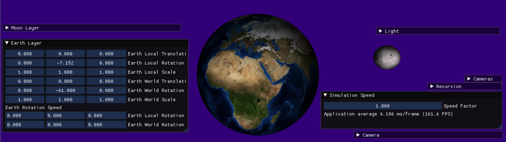
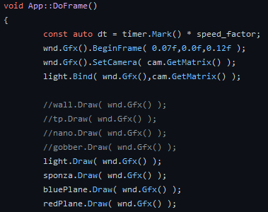
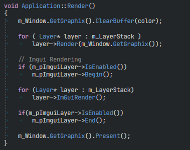
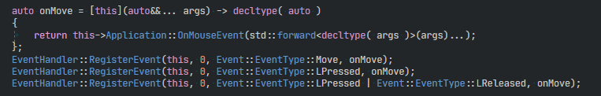

Small 3D engine (R&D)
For this Project I set myself a clear goal. I want to learn more about what goes into making a game engine.
When I started this project, I knew I wanted to learn how to work with DirectX11 without using the Effects system, but I didn't really know where to begin. As a guiding hand I looked at other projects and their architecture, which helped me to get started. I learned a lot from Microsoft's documentation on Win32, as well as looking into how other people had solved the same issues that I ran into. I found a render engine called "hw3d" by PlanetChili, after examining it, I took inspiration from the things I liked, and came up with my own solutions for what I didn't like.
Short Showcase:One example of what I didn't like was the hard-coded approach of ordering objects in the applications render function. seen below
My solution was to make a layered structure, where the rendered Objects get handled elsewhere. seen below
The idea of the layer structure is to separate each aspect into its own domain. With this in mind, I made an event handler that sends events to get handled through the layers, like a sift. First register the event which should be called, and what should trigger it. 
When the trigger happens, the event gets sent through.
The Rendering & Update loop happens in the reverse order of the event handling: Game > UI > Debug > Application. The engine's objects are built up from components, currently using a very simple component system which is enough for now. The engine can currently do just a few things: render primitive objects, diffuse texture rendering, point & directional lighting, dynamic camera movement Next on my list of things to implement is the option to import assets, multiple texture maps such as height-maps, normal maps and roughness maps etc.